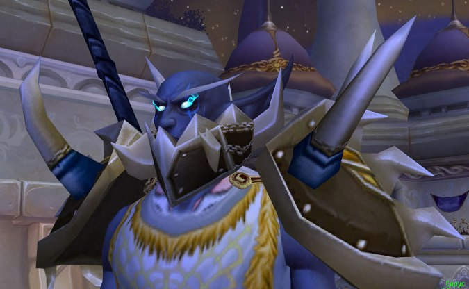
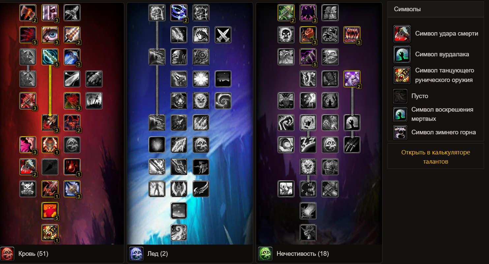

Сайт про Дюкича
Это мой персонаж в игре World of Warcraft

Всех приветствую Меня зовут Дюкич.
Я играю Рыцарем смерти- это премиальный класс в игре.
Для выполнения этого задания, я решил сделать сайт-визитку своего персонажа.
Мой персонаж обитает на сервере Sirus.su.
Немного о сервере
Этот сервер создавался с нуля в пик популярности патча 3.3.5а WotLK.
Проект развивается с тех самых пор и притепрел колоссальное количество изменений.
В проекте реализовано:
HD-модели всех персонажей
Добавлены новые расы доступные для выбора
Более 500 различных средств передвижения
Наборы экипировки переписаны и отбалансированы
Весь контент доработан в ручную и актуализирован
Новые поля боев и арены для сражений в PvP режиме
Добавлена третья сторона конфликта
И многое другое...
Информация о Сервере дается не на правах рекламы!
Немного о специализации "Кровь"
Мой билд

Преимущества данной специализации
Отличное выживание на любой заварухе
Очень хороший урон по площади
При использовании в расе "Ночерожденный" получаете максимум
Призываемые вами кровочерви разогнаны по урону и выживаемости
Невероятный бурст в начале боя
Недостатки данной специализации
Контроль по сбиванию заклинаний не бесплатный
Есть вероятность сорвать босса на себя и умереть
У Вас много завистников в игре